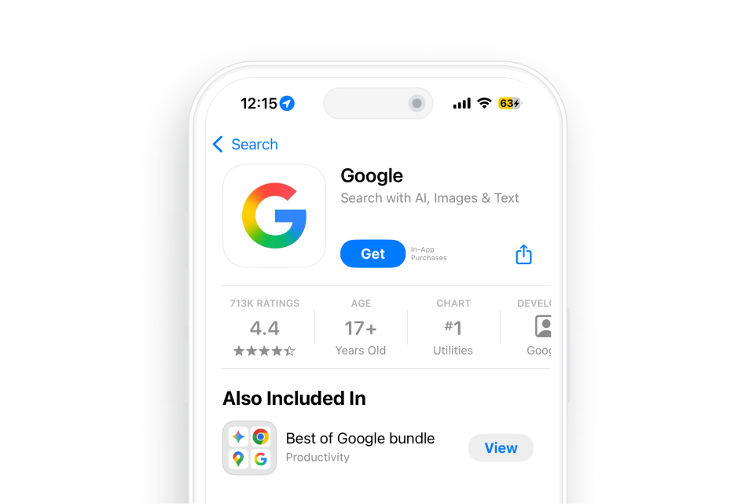
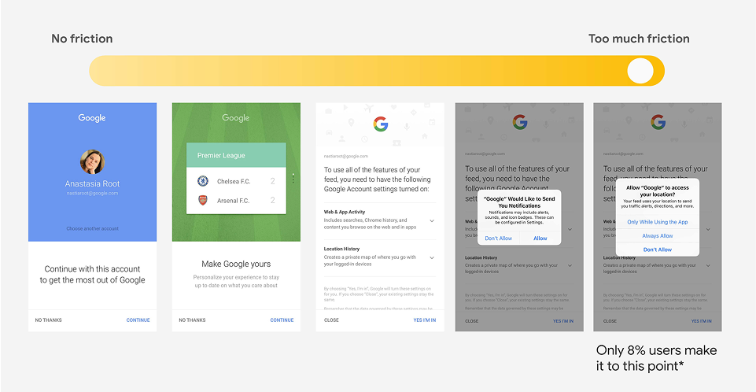
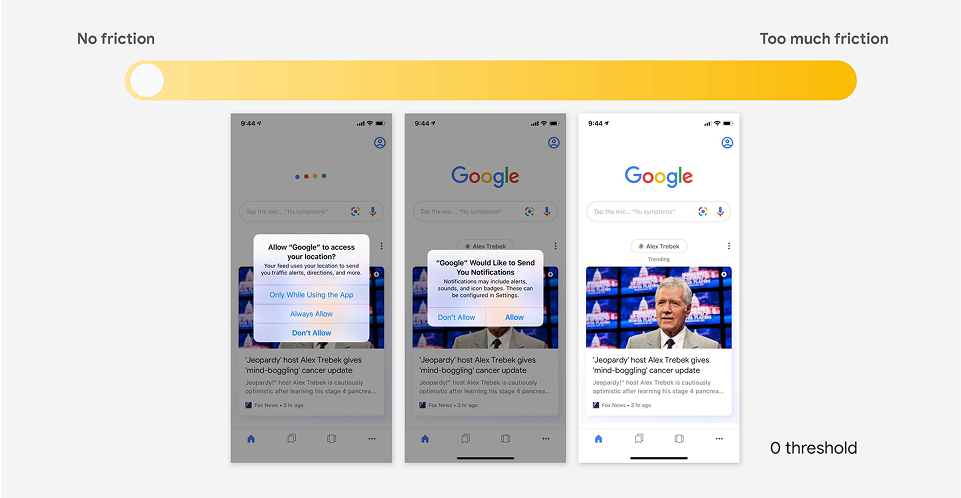
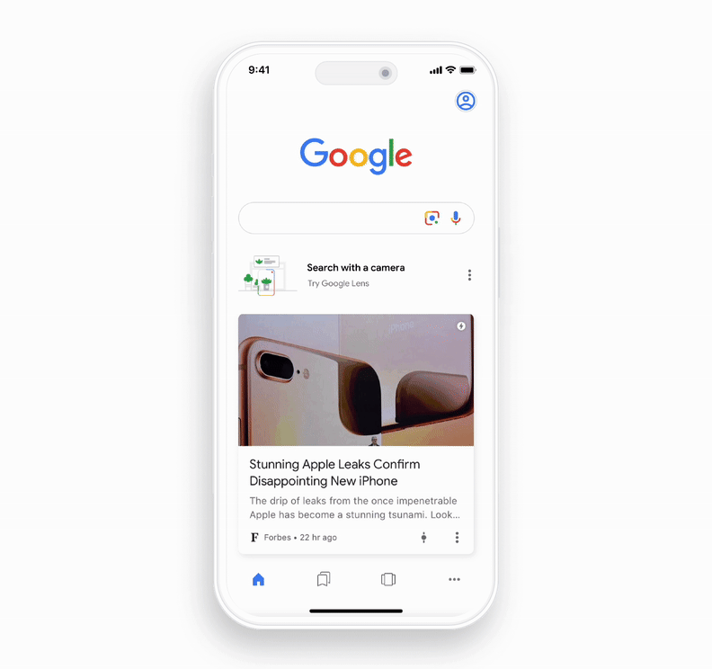
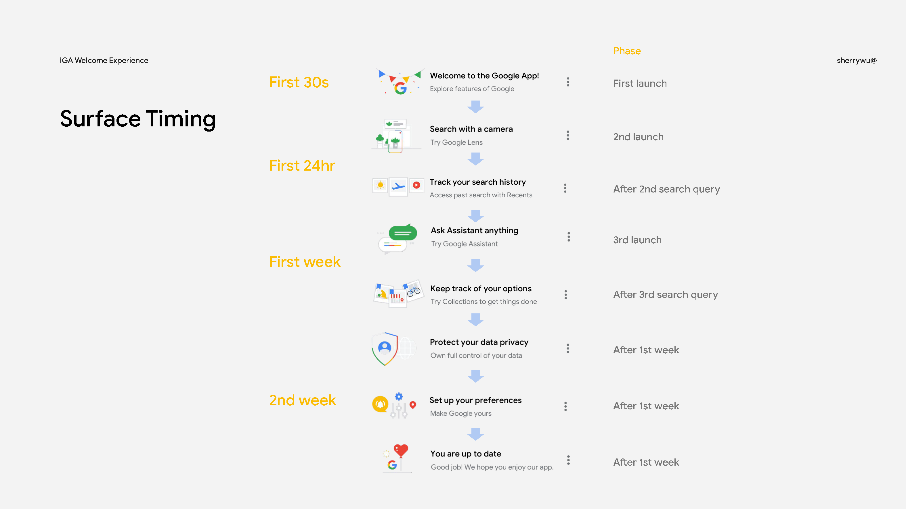
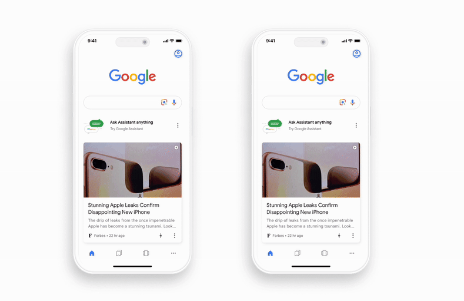
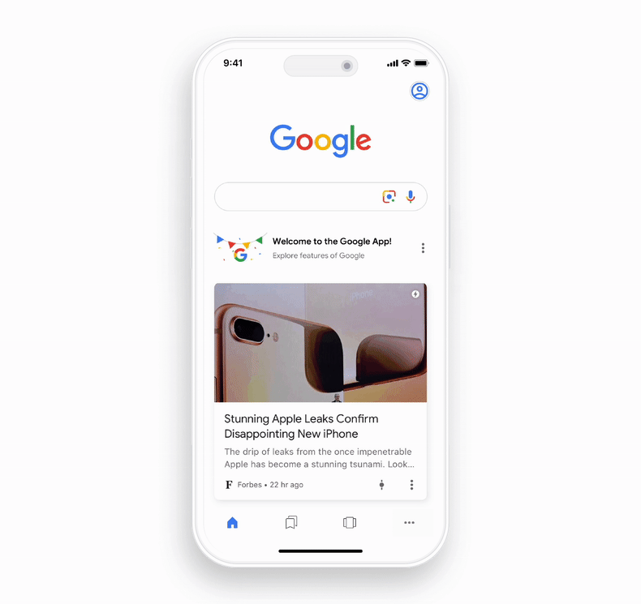

Background
Unlike Android users, who often encounter Google apps by default, iOS users are less familiar with Google products. At the same time, iOS users tend to be more intent-driven than their Android counterparts, which makes the onboarding journey especially critical.

Problem
In the past, the onboarding consisted of a five-step flow, but only 8% of users made it through to the end.
To reduce friction, we also experimented with removing onboarding altogether. However, this led to a sharp decline in activation: 41.2% of iOS users remained unsigned in, which meant they never received personalized recommendations. As a result, most people limited their usage to basic text queries, while the app’s more powerful features—Google Lens, Discover, or Google Assistant—saw only 8~16% adoption rates.


Solution
Instead of forcing users through a rigid onboarding flow that feels like a barrier, learning opportunities should appear at the right moments—contextual, timely, and tied to the user’s natural journey.
The welcome experience introduces Google Lens, Discover, and Assistant as they become relevant, instead of stacking every lesson into a first-run flow. People can start using the app right away, then pick up richer features over time—without dropping off a long onboarding sequence.
01

Learn about the features and capabilities of the app contextually
Rather than front-loading every instruction, users are introduced to features as they become relevant. For example, when the Google Lens onboarding card is surfaced, users are brought right into the Lens interface to try it out contextually.
02

Staged learning across the growth funnel
Learning is intentionally spaced out across the first 30 seconds, 24 hours, and two weeks of use. In the very beginning, users gain a quick win by completing a core task. Within the first day, they are guided toward the Google app - specific features and rewarded for small steps forward. Over time, the experience encourages them to adopt advanced functions, integrate the app into daily routines, and feel like “pros.” This staged approach aligns with natural retention milestones, making growth sustainable.
03

User-controlled guidance
The design puts users in charge of how proactive the app is in teaching them. Controls allow them to adjust the level of guidance—from surfacing only essential prompts to showing all available tips—or to dismiss learning moments entirely. By giving users agency, the system avoids being intrusive while still keeping the door open to deeper discovery.
04

A central learning hub
All learnings are anchored in a dedicated hub, where users can return at any time to review features or explore new ones. The hub is designed not just as a reference point, but as a source of accomplishment—helping users track what they’ve unlocked, reinforcing progress, and motivating continued exploration.